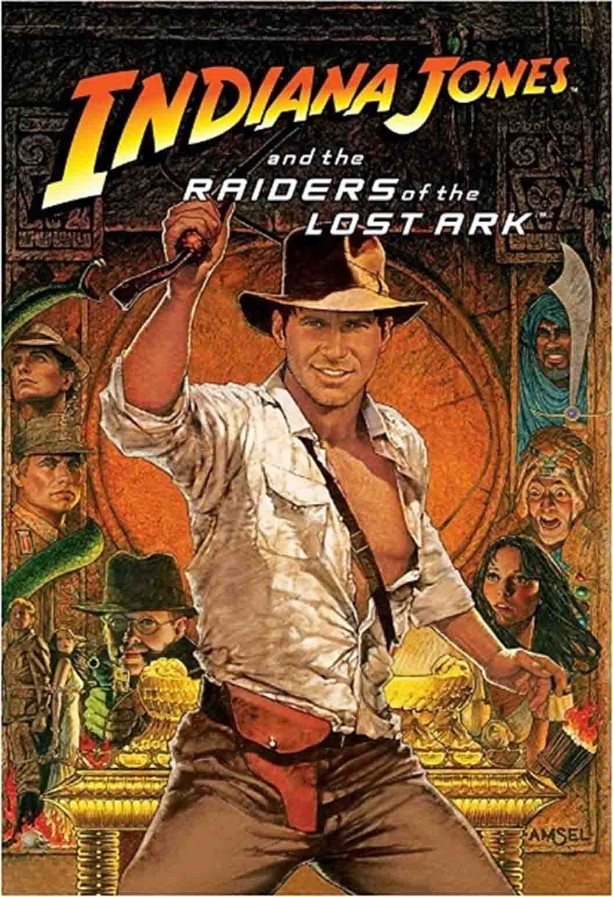
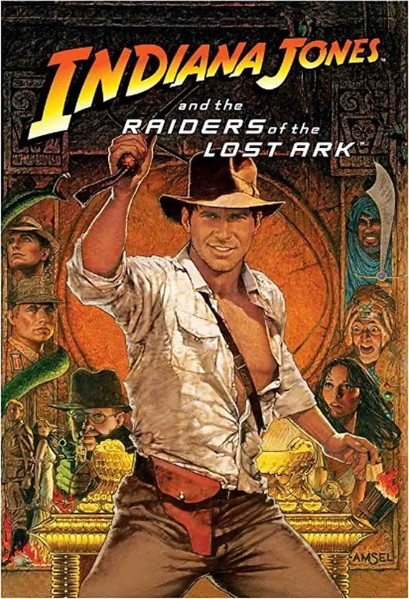
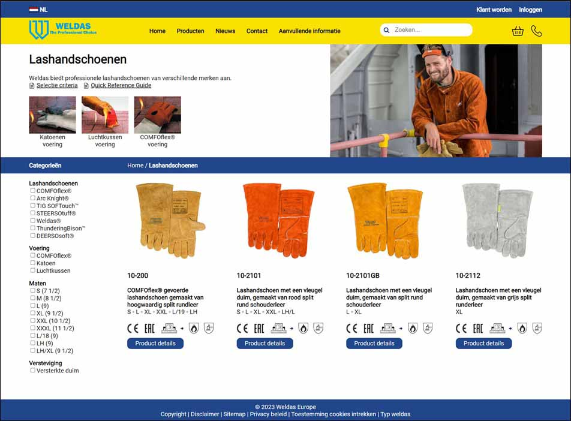
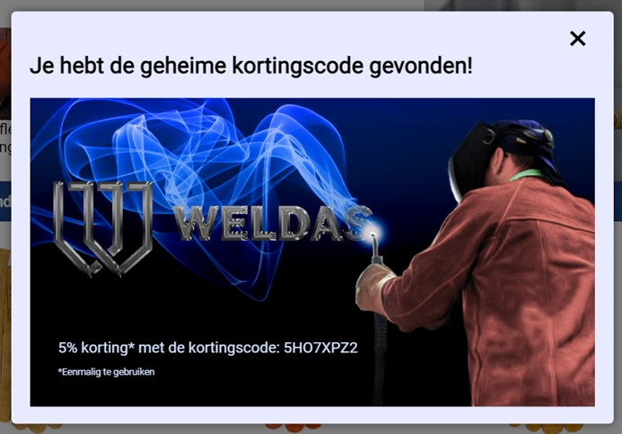
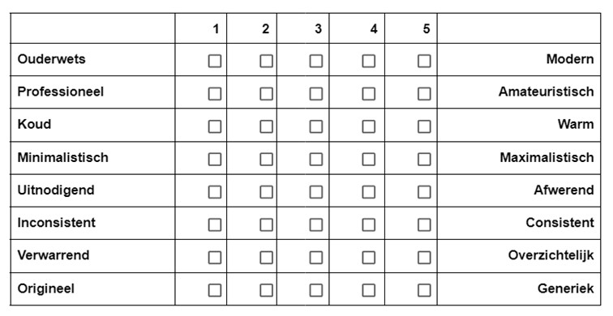

Maak een portfolio dat laat zien wie je bent als mediavormgever en welk talent je bezit. Het portfolio moet de volgende elementen bevatten:
1. Bewijs om je leerresultaten te onderbouwen
2. Reflecties op wat je hebt geleerd met betrekking tot deze leerresultaten
Om een geweldig portfolio te maken, moet je er een project van maken in plaats van het als een haastklus te zien. Net als bij de andere projecten die je dit semester hebt gedaan, heeft je portfolio een eigenaar (jijzelf) en een doelgroep (je docenten). Maak gebruik van de technieken en methoden voor visueel ontwerp, gebruikerservaring en ontwikkeling die in dit semester aan bod komen. Houd ook rekening met de feedback die je krijgt tijdens de portfolioreviewsessies.
Het ontwerpen van een portfolio website is een belangrijke stap bij het aantonen van mijn leerdoelen. De onderzoeksvraag die gesteld wordt, is als volgt: Wat zijn belangrijke factoren voor het ontwerpen van een portfolio website die voldoet aan de behoeften en verwachtingen van gebruikers (docenten)?
In dit onderzoek is kwalitatief onderzoek gedaan. Er is literatuuronderzoek (deskresearch) gedaan, analyse van beschikbare producten (deskresearch) en stakeholderanalyse (fieldresearch).
Een succesvolle portfolio website heeft belangrijke kenmerken zoals duidelijke navigatie, professionele uitstraling, responsiviteit, gemakkelijk te onderhouden, focus op werk, contactgegevens, social media-integratie, testimonials en analytics. Kleurgebruik en dark mode zijn belangrijk. Huidige trends zijn eenvoud en minimalisme, micro-interacties, gradiënts, felle kleuren, gebruiksvriendelijkheid en toegankelijkheid. Kies een geschikt lettertype voor leesbaarheid.
In dit onderzoek is gezocht naar een antwoord op de vraag: Wat zijn belangrijke factoren voor het ontwerpen van een portfolio website die voldoet aan de behoeften en verwachtingen van gebruikers (docenten)? Op basis van het onderzoek is besloten hoe de portfolio website wordt vormgegeven. De portfolio website bevat een duidelijke navigatie, professionele uitstraling, social media-integratie en focus op het gemaakte werk. Er is gekozen voor een zwart met geel ontwerp. Het ontwerp volgt trends van eenvoud, minimalisme, micro-interacties en gebruiksvriendelijkheid. Het gekozen lettertype 'Shadows Into Light' voor de kopjes weerspiegelt het handschrift van de ontwerper, terwijl het lettertype 'Roboto' zorgt voor leesbaarheid.
Er dient rekening gehouden te worden met dat er maar een paar portfolio websites zijn bekeken. Hierdoor is de conclusie voornamelijk gebaseerd op literatuuronderzoek en stakeholderanalyse.
Stel je voor dat je twee keer zo oud bent als nu en dat je terugkijkt op je leven. Je hebt iets gedaan wat je enorm gelukkig maakt. Je krijgt te horen dat iemand van plan is om een film te maken over jouw leven. Jouw taak is om een 'Double Life' Bill Gold movie poster te ontwerpen die de essentie van jouw leven vastlegt. Je gaat een presentatie geven van 2 minuten van je poster waarin je zowel het proces als het beste eindproduct presenteert.
 

Om inspiratie op te doen, heb ik gezocht naar posters die mij aanspraken. Door deze zoektocht realiseerde ik me dat ik graag een animatie poster wilde hebben. Ik heb elementen van verschillende posters gecombineerd om mijn ideale poster te creëren: de sierlijke letters van de tweede poster, het strand van de tweede poster en de getekende stijl van de derde poster.
Ontwikkel voor een artiest (Oumy of Sjors) een huisstijl die naadloos aansluit bij de artiest en zijn/haar muziekstijl. Dit wordt vastgelegd in een brandguide. Daarnaast ga je aan de slag met het ontwikkelen van een mediastrategie. Wat moet een artiest doen op bepaalde social media en streamingplatforms, maar mogelijk zijn er ook nog andere manieren te bedenken. Daarnaast ga je een aantal middelen uitwerken waarbij de mediastrategie wordt toegepast. Dit alles gebeurt in goed overleg met de artiest.
Uit de statetieken van Oumy is gebleken dat de primaire doelgroep van Oumy voornamelijk uit vrouwen bestaat en tussen de 18 en 34 jaar oud is. Op Instagram heeft Oumy meer mannelijke volgers dan op TikTok. De meeste van haar volgers zijn afkomstig uit Nederland, met name uit Rotterdam en Nijmegen. Daarnaast is er op beide platformen ook een groot aantal volgers uit Tilburg. Oumy heeft ook internationale volgers, waaronder uit het Verenigd Koninkrijk.
Concluderend kan worden gesteld dat Tamino, RY X en Moses Sumney elk een breed publiek aanspreken in de alternatieve muziekscene en zich richten op mensen die geïnteresseerd zijn in vernieuwende en experimentele muziek. Elk van deze singer-songwriters heeft een kenmerkende stijl en geluid dat verschillende leeftijdsgroepen en landen aanspreekt. Uit het beschikbare onderzoek blijkt dat hun belangrijkste doelgroepen zich voornamelijk bevinden in verschillende landen, maar dat ze allemaal vooral populair zijn bij jongvolwassenen tussen de 18 en 34 jaar oud.
Jongeren (12-20 jaar) zoeken tijdens de adolescentieperiode naar antwoorden over hun identiteit en toekomst. In de vroege volwassenheid (18-30 jaar) is het belangrijkste doel het opbouwen van liefdevolle relaties, terwijl in de middenvolwassenheid (30-60 jaar) de focus ligt op het bijdragen aan de samenleving.
Muziek heeft een emotionele kracht die mensen motiveert om er veel tijd aan te besteden. en kan gebruikt worden in therapie en het verminderen van stress en angst. Het luisteren naar droevige muziek kan leiden tot een verbeterd humeur en helpen bij het uitdrukken van gevoelens, door de verbinding die mensen ermee voelen.
Het thema van de muziek van Oumy dat ik hierbij heb gekozen is hoop in donkere tijden en sluit aan bij de doelgroep.
Social media is een belangrijk hulpmiddel voor het promoten van werk en het opbouwen van een band met fans.
Een website biedt een centrale plek voor informatie over de artiest en zijn/haar muziek, en kan dienen als verkoopplatform voor merchandise.
Optreden op open mic-avonden is een goede manier om jezelf te presenteren aan een publiek en meer bekendheid te krijgen.
Netwerken met andere artiesten en mensen in de muziekindustrie is ook belangrijk om waardevolle connecties te maken die kunnen helpen in de toekomst.
Het geven van live-optredens is een van de belangrijkste manieren waarop beginnende artiesten geld kunnen verdienen. Ze kunnen zichzelf promoten bij lokale clubs, bars en cafés of zich aanmelden voor open-mic avonden om hun muziek te laten horen en een publiek op te bouwen.
Het creëren en verkopen van merchandise kan een extra bron van inkomsten zijn voor beginnende artiesten.
Artiesten kunnen hun muzieklicenties verkopen voor gebruik in televisieshows, films, commercials en andere media om extra inkomsten te genereren.
Het gemiddelde YouTube-kanaal verdient ongeveer $18 per 1.000 advertentieweergaven en $3 tot $5 per videoweergave. Kijkers moeten echter op advertenties klikken of ze helemaal bekijken voordat de maker betaald wordt. Andere manieren om geld te verdienen aan YouTube zijn sponsoring, affiliate marketing, het verkopen van merchandise en het vragen van donaties via platforms zoals Patreon. Om geld te verdienen via YouTube moet je een YouTube-partner zijn met minimaal 1000 abonnees en 4000 kijkuren in de afgelopen 12 maanden. Het is belangrijk om consistent hoogwaardige inhoud te bieden en je publiek te laten groeien om je kansen op het verdienen van geld te vergroten
Facebook biedt verschillende manieren om geld te verdienen met video-inhoud. Een van deze manieren is het plaatsen van instream advertenties voor, tijdens en na de video's, waarbij de opbrengst afhangt van het aantal weergaven en de adverteerders. Fan abonnementen zijn een andere manier om inkomsten te genereren, waarbij supporters maandelijks betalen en beloond worden met een speciale badge. Verder kunnen makers van inhoud ook geld verdienen door sponsoring, waarbij ze samenwerken met merken en hun doelgroepen.
Om geld te verdienen via Instagram en TikTok moet je een influencer zijn. Met minstens 1000 volgers kun je al als influencer geld verdienen. Er zijn vijf verschillende influencer levels met verschillende verdienmogelijkheden. De eerste manier om geld te verdienen is door sponsoring van bepaalde merken en producten. De tweede manier is via affiliate marketing, waarbij je een link plaatst. Tot slot kun je geld verdienen door het promoten van je eigen muziek en merchandise.
Als onafhankelijke artiest kun je muziek op Spotify plaatsen via een erkende distributeur die meestal een bedrag of commissie rekent. Spotify betaalt niet per stream uit, maar het gemiddelde bedrag ligt tussen €0,003 en €0,004 per stream en is afhankelijk van de populariteit van een nummer. Met 1000 streams verdien je tussen de €3 en €4 euro en met 1 miljoen streams kun je tussen de €3.000 en €4.000 verdienen. Uitbetaling is mogelijk via PayPal zodra je minimaal $20 hebt verdiend.
Spotify is een populaire streamingdienst die beschikbaar is op verschillende apparaten en gebruikt wordt door meer dan 5 miljoen mensen in Nederland. De algoritmes van Spotify helpen gebruikers nieuwe muziek te ontdekken en het platform heeft een divers en betrokken publiek. Er zijn echter ook nadelen, zoals deals met platenlabels en kritiek op lage verdiensten voor artiesten. Met Spotify for Artists kunnen artiesten hun muziek promoten en hun profiel beheren. Wereldwijd heeft Spotify 456 miljoen actieve gebruikers en het is toegankelijk in 183 landen.
Apple Music is een streamingdienst die diverse muziek aanbiedt voor alle momenten, inclusief originele shows, concerten en exclusieve content. Het onderscheidt zich van andere streamingdiensten door de naadloze integratie met het Apple-ecosysteem, waardoor het gemakkelijk is om nummers te streamen en te downloaden op Apple-apparaten. Daarnaast biedt Apple Music tools aan voor artiesten om gemakkelijk promotie te maken, eigen profielen aan te maken, statistieken te bekijken en meer. Het heeft op maat gemaakte afspeellijsten en de mogelijkheid om een family of student abonnement af te sluiten. Een nadeel van Apple Music is dat de app een relatief korte proefperiode aanbiedt en er geen gratis optie is om muziek op een lagere kwaliteit met reclame te beluisteren. Ook biedt de app geen podcasts aan. Apple Music is een populaire streaming muziekdienst met meer dan 78 miljoen betalende abonnees in meer dan 170 landen.
Om zichtbaar te blijven op YouTube is het belangrijk om regelmatig video's te posten (1x per week) en originele content te maken met tags en titels die jouw video's vindbaar maken. Het hebben van een actief publiek is ook essentieel, omdat dit bijdraagt aan een hogere score op zowel YouTube als Google. Het aantal likes, deelacties en reacties op je video spelen hierbij een belangrijke rol.
Het wordt aanbevolen om op Facebook minstens drie keer per week iets te posten en maximaal twee keer per dag. Maak voor een groot deel content waarbij je mensen meeneemt in je leven en voor een klein deel content waar je je muziek promoot. Pas op met het uiten van je mening omdat je hierdoor volgers kunt verliezen.
Redesign en herbouw www.weldaseurope.com met de focus op een betere gebruikerservaring en een duidelijke call-to-action om conversie te bevorderen. De oude website wordt vervangen, deze wordt momenteel gebruikt als digitale brochure en houdt geen rekening met bezoekers van de site. De nieuwe website moet een marketinginstrument worden en wordt gebouwd in WordPress door Happy Horizon met een op maat gemaakt thema, waarbij vrijheid bestaat in de front-end technologie. De URL-structuur moet hetzelfde blijven als die van de huidige website. Er is een beperkte stijlgids beschikbaar, maar hiervan kan worden afgeweken met onderbouwing. Weldas is een marktleider in Europa en wil een strakke marketing website om verdere uitbreiding te ondersteunen.
Ik heb een heuristische evaluatie uitgevoerd op de website van Weldas. Tijdens deze evaluatie heb ik verschillende aspecten van de gebruikerservaring beoordeeld op basis van de ernst van de problemen die ze veroorzaken. De aspecten die de meeste problemen kunnen veroorzaken zijn: het niet aan kunnen passen van het aantal producten in de bestellijst, bestellen zonder dat de gegevens gecontroleerd zijn en het proces om de juiste handleiding te vinden. Daarnaast zijn er ook nog een aantal ernstige maar niet catastrofale aspecten te vinden die verbeterd zouden kunnen worden. Hierover is meer informatie te zien in het pdf-document.
Door middel van card sorting kunnen ontwerpers en onderzoekers inzicht krijgen in hoe mensen informatie begrijpen, categoriseren en navigeren. De onderzoeksvraag die gesteld wordt, is als volgt: Wat zijn de belangrijkste categorieën en subcategorieën bij het uitvoeren van card sorting voor de website van Weldas?
Tijdens de UX-dag hebben alle groepsleden individueel deelgenomen aan card sorting voor de website van Weldas. Daarnaast is er een card sorting ontwikkeld, waarbij is gekeken naar de structuur en inhoud van andere websites die gerelateerd zijn aan laswerkzaamheden. De bevindingen werden als groep besproken en geanalyseerd, waarbij overeenkomsten en verschillen tussen de categorisaties werden onderzocht. Uiteindelijk zijn de individuele resultaten samengevoegd tot één geïntegreerde card sorting.
De individuele card sorting op de UX dag op de website van Weldas.
De card sorting op de website van Weldas gecombineerd met gerelateerde websites.
In dit onderzoek is gezocht naar een antwoord op de vraag: Wat zijn de belangrijkste categorieën en subcategorieën bij het uitvoeren van card sorting voor de website van Weldas? De afbeelding laat de als groep geïntegreerde card sorting op de website van Weldas zien.
De uitkomsten van de card sorting zijn niet getest onder de doelgroep. Hierdoor kan het zijn dat de doelgroep liever een andere indeling had gezien.
De bedoeling van deze analyse was om te onderzoeken of er bepaalde trends zijn op het gebied van webdesign voor B2B-bedrijven. De onderzoeksvraag die gesteld wordt, is als volgt: Hoe beïnvloeden de positionering, inhoud en functionaliteiten van de homepagina van een website de gebruikerservaring van de website?
De lijst met 11 B2B-websites, verstrekt door Fontys, zijn geanalyseerd op webdesign-aspecten. Opvallende elementen zijn kort vermeld en de bevindingen zijn geëvalueerd om inzicht te krijgen in de ontwerpelementen van B2B-websites.
De websites bevatten verschillende visuele effecten, zoals bewegende elementen en kleurverschillen bij hovering. De websites hebben ook gemeenschappelijke elementen, zoals een grote foto op de homepagina, login-opties, contactmogelijkheden en call-to-action opties. Sommige websites tonen prijzen en bestelopties, terwijl andere dat niet doen. De navigatiebalk is vastgezet op sommige websites. Over het algemeen hebben de websites een rustige uitstraling en duidelijke elementen.
In dit onderzoek is gezocht naar een antwoord op de vraag: Hoe beïnvloeden de positionering, inhoud en functionaliteiten van de homepagina van een website de gebruikerservaring van de website? Belangrijke elementen op de homepagina zijn de afbeelding, navigatiebalk met contact- en inlogoptie, meertalige opties, prijsaanvraagmogelijkheden, locatiekaart op de contactpagina, interactieve elementen en call-to-action opties.
Het aantal websites die zijn bekeken is beperkt, wat invloed gehad kan hebben op de uitkomst.
Het optimaliseren van een call-to-action (CTA) is van cruciaal belang voor bedrijven die hun online conversie willen verhogen. De onderzoeksvraag die gesteld wordt, is als volgt: Welke elementen van een call-to-action zijn het meest effectief in het stimuleren van conversie op een website, en hoe kunnen deze elementen het beste worden geïmplementeerd?
Dit onderzoek richt zich op de implementatie van effectieve call-to-action-elementen op B2B-websites om conversie te stimuleren. Het onderzoek is gebaseerd op kwalitatief literatuuronderzoek dat bronnen van wetenschappers, marketeers en marketingbureaus omvat.
Telefoonnummers op websites worden steeds vaker klikbaar gemaakt, zodat bezoekers direct kunnen bellen vanaf hun mobiele apparaat. Bedrijven bieden ook callback-functies en chatfuncties aan voor klantensupport. B2B-bedrijven gebruiken sales call-to-actions en chatbots om verkoopgesprekken te stimuleren. Geautomatiseerde telefonie zoals IVR wordt gebruikt om klantenservice te verbeteren.
Effectieve CTA-elementen zijn duidelijke en beknopte tekst, opvallende kleuren zoals blauw, de juiste grootte en vorm van de button, logische positionering boven de vouw en het creëren van urgentie.
In dit onderzoek is gezocht naar een antwoord op de vraag: Welke elementen van een call-to-action zijn het meest effectief in het stimuleren van conversie op een website, en hoe kunnen deze elementen het beste worden geïmplementeerd? Effectieve call-to-action (CTA) op websites verhogen conversies en verbeteren de klantervaring. Trends zoals Click-to-Call, callbacks, chatfuncties, sales CTA's en geautomatiseerde telefonie spelen hierbij een rol. Optimaliseer de CTA-button met de juiste tekst, kleur, grootte, vorm en positie. Creëer urgentie door beperkte beschikbaarheid en kortingsaanbiedingen.
Hoewel dit onderzoek waardevolle inzichten biedt, zijn er nog enkele aspecten die verder onderzoek verdienen. Het zou bijvoorbeeld interessant zijn om de impact van specifieke kleuren en tekstformuleringen op de conversie verder te onderzoeken. Daarnaast kan de invloed van de CTA-positie op verschillende apparaten en schermformaten nader worden onderzocht.
Het doel van dit onderzoek was om inzicht te krijgen in welke call-to-action het meest effectief is in het bevorderen van conversie op de website www.weldaseurope.com. Om dit te bereiken, luidt de onderzoeksvraag: Wat is de meest effectieve call-to-action om conversie te bevorderen op de website www.weldaseurope.com?
Voor dit onderzoek zijn 10 respondenten gevraagd die ervaring hebben met B2B-inkopen. Onder deze respondenten zijn een triad test en een A/B test afgenomen.
Triad test
Vraag: Als je contact wilt opnemen met Weldas via hun website, in welke volgorde zou je dan op de knoppen klikken? Kun je aangeven welke knop je eerst zou selecteren, welke knop je daarna zou kiezen en welke knop je als laatste zou selecteren?
A/B test
Vraag: Geef aan welke knop je eerder zou aanklikken.
Triad test
Uit de resultaten blijkt dat de meerderheid van de deelnemers de voorkeur geeft aan de contactknop, terwijl het telefoonnummer de minste voorkeur heeft. Het zou kunnen dat het niet voldoende duidelijk was dat het telefoonnummer bovenaan in de navigatiebalk zou staan. Een deel van de respondenten heeft aangegeven liever een mail te sturen dan te bellen.
A/B test
Het bleek dat de meerderheid van de respondenten de voorkeur gaf aan een donkerblauwe knop boven een lichtblauwe knop.
In dit onderzoek is gezocht naar een antwoord op de vraag: Wat is de meest effectieve call-to-action om conversie te bevorderen op de website www.weldaseurope.com? Uit het onderzoek bleek dat de meerderheid van de respondenten de voorkeur gaf aan de contactknop en een donkerblauwe knop verkoos boven een lichtblauwe knop. Enkele respondenten gaven echter de voorkeur aan e-mail boven telefonisch contact.
Het onderzoek is onder een beperkte steekproef uitgevoerd. Een grotere groep zou mogelijk tot andere uitkomsten hebben geleid.
Aanbevelingen voor Weldas zijn het gebruik van een donkerblauwe knop, toevoegen van een "Neem contact op met een specialist" knop en het bieden van een e-mailoptie.
Deze development opdracht heeft twee delen: het omzetten van jouw design naar code (mobile first) en het ontwikkelen van een Easter egg die past bij de doelgroep. Om de Easter egg te kunnen implementeren, moet je de nieuwe opzet van de Weldas-website ontwikkelen gebaseerd op het grafisch en interactie ontwerp van de vorige opdracht.
Voor het mobile first aspect kun je eenvoudig Devtools in je browser gebruiken om de gewenste telefoonbreedte te selecteren. Schrijf media queries voor desktop elementen die aanpassingen nodig hebben. Bedenk een verborgen functionaliteit en ontwikkel een werkend proof of concept.
Een Easter Egg is een speelse verrassing of verborgen functie op een website. Weldas wil een Easter Egg toevoegen aan hun website, zowel voor de mobiele versie als de desktopversie. Daarom luidt de onderzoeksvraag: Hoe maken andere websites gebruik van verschillende varianten van Easter Eggs?
Dit onderzoek analyseert het gebruik van Easter Eggs op verschillende websites via een kwalitatieve methode. Een literatuurstudie met behulp van Google is uitgevoerd om relevante resultaten te verkrijgen. Er werd bij elke Easter Egg gecontroleerd of deze nog steeds bestond.
Op GoSkills.com is een Konami-code Easter Egg met een spel waarbij een kortingscoupon gewonnen kan worden. In het verleden hebben Vogue UK, Facebook, Marvel en ESPN ook Konami-code Easter Eggs gebruikt. Google biedt diverse speelbare spellen aan via zoekopdrachten met het woord "game". Bij het invoeren van "askew" in de Google-zoekbalk wordt de website scheef weergegeven. Google heeft een foutpagina met een I’m a teapot. Als je op de theepot klikt, zie je een leuke animatie. Op Wikipedia verschijnt er een melding wanneer er over de foto van een egel wordt gehoverd, en bij het klikken wordt er doorgelinkt naar een webpagina met daarop een andere afbeelding. Coca-Cola verbergt hun logo in de broncode van hun website. The Oatmeal voegt een vliegende dinosaurus toe in hun broncode. En Amazon verbergt een eend in hun broncode.
In dit onderzoek is gezocht naar een antwoord op de vraag: Hoe maken andere websites gebruik van verschillende varianten van Easter Eggs? Dit onderzoek laat zien dat websites Easter Eggs op verschillende manieren gebruiken om de gebruikerservaring te verbeteren, zoals in de broncode, met de Konami-code, of via interactieve events zoals hover en click.
Hoewel Easter Eggs leuk en spannend kunnen zijn, mogen deze de functionaliteit van de website niet in de weg staan. Het is belangrijk om ervoor te zorgen dat Easter Eggs niet verwarrend of storend zijn voor de gebruikerservaring, maar eerder een aanvulling vormen op de algehele interactie met de website. Dit is niet onderzocht tijdens dit onderzoek.
Het doel van dit onderzoek is om inzicht te krijgen in de gebruiksvriendelijkheid en de effectiviteit van de Easter Egg op de listerpage van de website van Weldas. Om dit te bereiken, luidt de onderzoeksvraag: Hoeveel respondenten vinden de Easter Egg op de listerpage van de website van Weldas?
Vanwege tijdgebrek konden opdrachtgevers, docenten en klasgenoten niet deelnemen aan het zoeken naar de Easter Egg. Er werden 10 respondenten uitgenodigd voor de usability test, waarbij ze de Listerpage te zien kregen zonder door te kunnen klikken. De respondenten moesten de Easter Egg vinden. Als dit niet lukte binnen 5 minuten, werd de test gestopt en werd hen uitgelegd hoe deze te vinden.
Usability test
 Taak: Vind de hint om de verborgen Easter Egg te vinden op de Listerpage.
Het is 8 van de 10 respondenten gelukt om de Easter Egg te vinden. De gemiddelde tijd van de respondenten die zelfstandig de Easter Egg vonden, was 2 minuten en 50 seconden.
9 respondenten begonnen meteen op elementen te klikken. 1 respondent ging meteen op zoek naar de hint. 3 respondenten hebben las gerelateerde woorden in de zoekbalk getypt, waaronder ‘handschoenen’. 1 respondent heeft aangegeven dat het vinden van de Easter Egg als een beloning voelt. Er waren 2 respondenten die de hint wel hadden gevonden, maar niet meteen begrepen wat ermee bedoeld werd. De hint werd geselecteerd in plaats van uitgevoerd.
In dit onderzoek is gezocht naar een antwoord op de vraag: Hoeveel respondenten vinden de Easter Egg op de listerpage van de website van Weldas? De meeste respondenten klikten op verschillende website-elementen, vooral boven de vouw. Binnen 5 minuten vonden bijna alle respondenten de Easter Egg. Het daadwerkelijke aantal gebruikers dat de Easter Egg ontdekt, kan variëren vanwege uitgeschakelde klikbare elementen tijdens het onderzoek en het beperkte aantal producten op de pagina.
Verder onderzoek naar de gebruikerservaring en effectiviteit van de Easter Egg op de volledige website is aan te raden.
Ik heb een persoonlijke begeleider vanuit Fontys gekozen en mijn plan van aanpak met hem besproken. Ik wil diverse producten ontwikkelen voor een yogastudio, waaronder een verbeterd logo, chakra wallpaper, visitekaartje, foto's voor de website en optimalisatie van de desktopversie. Ik wil ook onderzoek doen naar het design van yoga websites, mobiele website eisen en een user test uitvoeren. Daarnaast wil ik een tarotkaartfunctie toevoegen en een mobiele versie van de website maken. Ik zal documentatie bijhouden voor elk product en een presentatievideo maken om het proces en de resultaten te tonen op de presentatiedag. Het is belangrijk dat hierbij rekening wordt gehouden met de huisstijl van de yogastudio.
Een gedetailleerde opdrachtomschrijving, een plan van aanpak en de huisstijl zijn te vinden in het pdf-document.
Het doel van dit onderzoek wass om een inzicht te verkrijgen in de verschillende elementen die een rol spelen bij het ontwerpen van een succesvolle yoga website. De onderzoeksvraag luidt als volgt: Hoe kan De Albatros het design van de website optimaliseren om de gebruikerservaring te verbeteren en gebruikers actief te betrekken?
Door concurrentieanalyse van bestaande yoga websites en literatuuronderzoek naar trends en ontwikkelingen in de sector worden waardevolle inzichten verkregen. Het onderzoek richt zich op belangrijke aspecten zoals gebruikerservaring, visueel ontwerp, navigatie, inhoudsstrategie en technische functionaliteiten. Vijf yoga websites zijn geanalyseerd en er is gezocht naar recente trends en ontwikkelingen in website design.
De websites variëren in ontwerp en functionaliteit. Ze maken gebruik van verschillende visuele elementen, kleurenpaletten en navigatiestijlen om de gewenste sfeer en gebruiksvriendelijkheid te creëren. De mobiele versies passen zich aan door onder andere het gebruik van hamburgermenu's en aangepaste lay-outs voor kleinere schermen.
Het optimaliseren van de moderne uitstraling van een website omvat het gebruik van opvallende typografie, responsieve header visuals, semi-flat design, het hamburgermenu op mobiele websites en korte product- en featurevideo's. Voor een goede responsiviteit van een website is het belangrijk om rekening te houden met de gangbare schermformaten, zoals 480px, 768px, 1024px en 1280px. Bij het kiezen van lettertypen voor een website is het belangrijk om rekening te houden met web safe fonts die direct geladen kunnen worden. Bij lettertypes die gebruikt worden voor normale teksten is de leesbaarheid een absolute must. Voor koppen en titels kunnen andere lettertypen gebruikt worden dan voor teksten. Bij het schrijven van teksten op een website is het belangrijk om rekening te houden met het taalniveau van de lezers.
Dit onderzoek heeft zich gericht op het verkrijgen van inzichten in de verschillende elementen die een rol spelen bij het ontwerpen van een succesvolle yoga website. Belangrijke ontwerpelementen zijn onder andere passende kleurenpaletten, header visuals, call-to-action elementen en een responsive design. Andere veelvoorkomende elementen zijn moderne typografie, semi-flat design, hamburgermenu's op mobiele websites en korte video's. Een minimalistische uitstraling is ook belangrijk. Responsiviteit is essentieel voor een consistente gebruikerservaring.
Het onderzoek had beperkingen, zoals een beperkt aantal onderzochte websites en subjectieve beoordelingen van ontwerpelementen. Verbeteringen kunnen worden gemaakt door meer websites te onderzoeken en feedback van andere onderzoekers te verkrijgen.
Dit onderzoek heeft als doel om een diepgaand inzicht te verkrijgen in de belangrijkste eisen en best practices voor mobiele websites, met als focuspunten responsiviteit, laadtijd, navigatie, contentweergave en interactie. Om dit te bereiken, luidt de onderzoeksvraag: Hoe kan de website van De Albatros voldoen aan de vereisten voor een goede mobiele website?
Voor het beantwoorden van de onderzoeksvraag wordt deskresearch uitgevoerd. Er wordt online gezocht naar relevante bronnen over het ontwerpen van mobiele websites, met behulp van specifieke zoektermen zoals 'responsive design', 'mobile website', 'elements mobile website', 'mobile compatibility' en 'fonts mobile website'.
Het gebruik van een eenvoudige navigatiebalk met duidelijke labels of pictogrammen en een gemakkelijk bereikbare en zichtbare positie is essentieel. Daarnaast moet de mobiele website een responsief ontwerp hebben dat zich aanpast aan verschillende schermformaten en apparaten. Het optimaliseren van de laadtijd is ook cruciaal, aangezien mobiele gebruikers vaak te maken hebben met beperkte bandbreedte en langzamere internetverbindingen. Het verbeteren van de gebruiksvriendelijkheid, beperken van scrollen en zoomen, zorgen voor goede leesbaarheid en toetsenbordvriendelijkheid zijn andere belangrijke overwegingen bij het ontwerpen van een mobiele website. Tot slot is het testen van compatibiliteit op verschillende mobiele browsers en apparaten noodzakelijk om een goede weergave en functionaliteit te waarborgen.
Dit onderzoek heeft zich gericht op het verkrijgen van inzicht in de belangrijkste eisen voor het ontwerpen van mobiele websites. Bij het ontwerpen van een mobiele website zijn er belangrijke aspecten om rekening mee te houden, zoals navigatie, responsief ontwerp, laadtijd, gebruiksvriendelijkheid, beperkt scrollen en zoomen, goede leesbaarheid, toetsenbordvriendelijkheid en compatibiliteit met verschillende apparaten en browsers.
Het is belangrijk om op te merken dat er gevallen zijn waarin sommige bronnen elkaar tegenspreken.
Het doel van dit onderzoek is om de voorkeur van gebruikers te bepalen voor het ontwerp van twee yoga websites. Om dit te bereiken, luidt de onderzoeksvraag: Welk ontwerp van de yoga website spreekt gebruikers het meest aan en genereert de hoogste mate van betrokkenheid?
Voor dit onderzoek werden zes respondenten geselecteerd met interesse in yoga, spiritualiteit of persoonlijke groei. Via het eigen netwerk werden ze uitgenodigd voor deelname aan het onderzoek. Field research omvatte een A/B-test met twee websiteversies waarbij de respondenten hun voorkeur aangaven. Tevens werd voor elk ontwerp een Semantic Differential uitgevoerd.
A/B test
Vraag: Welk ontwerp spreekt jou het meest aan voor een yogastudio?
Semantic differential
Vraag: Welke woorden omschrijven de website? Analyseer de website op basis van de volgende termen.
Er hebben 5 van de 6 respondenten gekozen voor de gele website.
Dit zijn de gemiddelde scores op een schaal van 1 tot 5, waarbij 1 het linker woord vertegenwoordigt en 5 het rechter woord.
De meeste respondenten vinden de gele website aantrekkelijker en beschouwen deze als moderner, professioneler, warmer, uitnodigender en overzichtelijker dan de gekleurde website. De websites zijn vergelijkbaar qua consistentie en overzichtelijkheid.
Vanwege tijdgebrek is het onderzoek uitgevoerd onder slechts zes respondenten, waarbij de voorkeur uitging naar de gele website. Het is belangrijk op te merken dat de beperkte steekproefomvang de resultaten kan beïnvloeden en dat er geen significante analyse is uitgevoerd om de verschillen te bevestigen.
Op basis van dit onderzoek is de aanbeveling om verder door te gaan met de ontwikkeling van de gele website.
Het doel van dit onderzoek is om de voorkeur te bepalen voor het ontwerp van de kopjes op de yoga website. Om dit te bereiken, luidt de onderzoeksvraag: Welk ontwerp van de kopjes op de yoga website spreekt gebruikers het meest aan en is het meest leesbaar?
Voor dit onderzoek werden 10 respondenten met interesse in yoga, spiritualiteit of persoonlijke groei geselecteerd via het eigen netwerk. Er werd kwantitatieve fieldresearch uitgevoerd door middel van een A/B/C-test. De respondenten varieerden in leeftijd (15-55) en bestonden uit 4 mannen en 6 vrouwen.
A/B/C test
Vraag 1: Welke van de drie vind je het meest leesbaar?
Vraag 2: Welke van de drie vind je het modernste?
Vraag 4: Welke van de drie vind je het mooiste?
Van de respondenten koos één op de tien voor de gele tekst, één op de tien voor de tekst met een lijn en acht op de tien kozen voor de tekst met een tekstvak.
Van de respondenten koos één op de tien voor de gele tekst, twee op de tien kozen voor de tekst met een lijn en zeven op de tien voor de tekst met een tekstvak.
Van de respondenten kozen drie op de tien voor de gele tekst en zeven op de tien voor de tekst met een tekstvak. Geen respondent hebben gekozen voor de tekst met lijn.
De kop met het tekstvak werd door de respondenten beschouwd als de meest leesbare, modernste en mooiste optie.
Het onderzoek had een kleine steekproef, dus de resultaten zijn mogelijk niet representatief. De respondenten moesten zelf inzoomen op een foto met alle drie de afbeeldingen, wat invloed kan hebben gehad op de resultaten.
De kopjes met tekstvak werden door de respondenten als het meest leesbaar, modern en mooi ervaren. Daarom wordt aanbevolen om gebruik te maken van het kopje met tekstvak op de website.